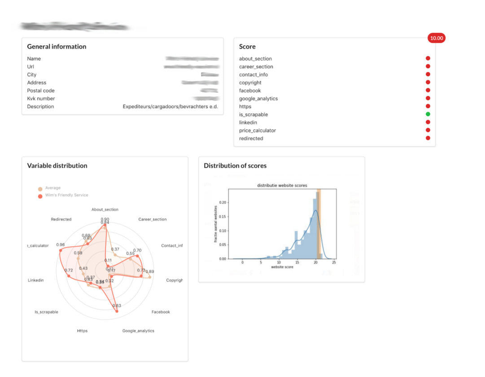

Arms Transfers Database
data visualisation of the transfers of weapons around the world.

MASTER
BACHELOR
With the amount of data growing each day, the use of algorithms seems to shift from a supportive role of data processing to a decision making tool. In the past research has been done to identify the dangers that machine learning in decision making might cause. A popular critique is that it is an error-prone and opaque process, that can be biased by technical, social and emergent biases. What a lot of people seem to forget, is that even though human decision making is socially accepted, it can also be biased and is not necessarily the better option. This research explores the field of social acceptance of machine learning in a decision making context, since this was not explored before. It is researched whether social acceptance is situationally dependent, if people are aware of biases and if there is a correlation between social acceptance and perceived biases. It was found that the majority seems to be positive about the general use of machine learning and is not afraid of it. There exists a general trust in and acceptance of machine learning. The acceptance of machine learning, however, seems to be situation dependent. Next to that, people seem to be aware of biases introduced by machine learning, especially the technical biases. Furthermore there does not seem to be a relation between the acceptance and the biases. Finally, preferably a combination of both machine learning and human cognition are used for decision making.
In modern day society, information and data is all around us and more fast-paced than ever. The view on learning has changed drastically through the last decade, mainly from passive information acquisition, to active gathering of and reflection on information. A method to achieve this way of learning is through the use of gamification, creating an application with learning and gaming elements, to achieve a motivational environment for fun and learning. To test the learning performance of gamification in comparison to traditional learning, three different learning methods were tested on learning performance: a gamified application with more added game elements, a gamified application without additional content and a traditional PowerPoint presentation. The gamified application created can be described as a game with an explorative goal, non-contextual to the topic to learn. Each version contained information slides with the same information in the same format, about an advanced topic, in this case the Internet of Things. The performance was tested using a quiz with questions about the presented information, resulting in a correctness score. This was expanded by a questionnaire about fun and perceived retention and effectiveness, to further analyze why gamification might or might not be effective. No evidence was found to support that a gamified application, in general, works better than a PowerPoint presentation. There is, however, an indication that gamification might increase performance for audiences that like games, as long as the game is not distracting them from learning.
Where newspapers used to send reporters to every event, technology and the internet makes it easier than ever to be informed about the latest events that are happening. This development led to more and more news sources covering the same events, but with this development, coverage biases were introduced. So far there is no tool developed to analyze the news coverage and possible biases. This research uses the Global Database of Events Language and Tone (GDELT) to answer the question: “Is it possible to create a model that finds similarity in reported events between different news sources in real time, based on high-level event data?”. The framework introduced by this study uses the cosine similarity of news outlets and events to visualize the news coverage by creating a network based on it. The network can adapt to new incoming data by using a lambda structure, and therefore includes the big data dimensions volume and velocity. The study found that the network that is created is a clear network that can be used as a starting point or base to do further research on.
People have used the internet for years to express their opinions on a wide variety of topics like religion, politics and much more. Traditionally these opinions would be posted on personal websites like blogs or message boards. Since the growing popularity of microblogging services however, people have started more and more to voice their opinions on these platforms. One of the biggest microblogging services today is Twitter. Since its inception in 2006 the number of tweets posted per day has risen to 500 million in 2013 [1]. This provides researchers with a fast pool of opinions and sentiment on numerous topics. The combination of textual messages with hashtags and mentions makes this data a good source for sentiment and topic analysis. A probable use of these types of analysis is to predict the outcome of elections based on the sentiment people feel towards participating candidates. The main research objective of this paper is to see if similarities can be found between tweets send prior to the 2016 U.S. presidential elections and the actual results. This is done based on 600.000 tweets from the weeks prior to the election. All these tweets are geotagged, therefore the state the tweet was posted in is known. Furthermore the findings of this paper have been correlated with state level data, like demographic and average income data. Another aim of this research was to extract the most prominent topics discussed in the tweets. This topic analysis was done in order to compare our results with the most prominent topics in the elections according to other traditional research. This paper is comprised of the methods that were employed to process and analyze the tweets, the results that were gathered and the processing method. Finally a conclusion to our main research question will be provided.
Quora is a platform where questions can be asked and answered. Since Quora is a well known and widely used platform, a lot of questions are duplicates or have the same intent. Currently a Random Forest model is used to identify questions that are the same. The challenge of the kaggle competition was to use natural language processing to find duplicates. Quora provided a labeled training set consisting of 317205 pairs of questions, that were labeled on whether the intent of the question was the same or not and a test set with 81126 pairs of questions. The goal was to get the highest accuracy on the test set.
The police and justice departments have a hard time keeping up with the steady increase of fraudulent activities. An automated fraud detection system, based on machine learning, can support current cuts in the police their budget for manpower and could result in other suspicious companies than found with previous methods. This paper explores a unsupervised learning approach, so detect facade/front companies, based on their website data. A user interface was created to visualize the model. The created model is generalisable, which means that it can handle large and dynamic feature sets, support data from different domain as long as it is delivered in the right format and adapt when the dataset is updated.
NOTE: due to privacy constraints and secrecy, the paper omitted and the image blurred.
Om een toonaangevende science faculteiten in Europa te creëren, de Amsterdam Faculty of Science (AFS), willen de Universiteit van Amsterdam (UvA) en de Vrije Universiteit (VU) de opleidingen informatiewetenschappen fuseren. In het huidige beleid nemen de colleges van bestuur van de UvA en VU de besluiten voor de AFS. Hier is echter het probleem dat de AFS zelf weinig inspraak heeft op de oplossingen. Om dit te voorkomen wordt geadviseerd de colleges van bestuur UvA-VU een meer sturende rol te geven en de AFS zelf de oplossingen zo te laten vormgeven dat ze aansluiten bij de cultuur van de AFS. Hierbij houden de colleges van bestuur zelf het recht om de oplossingen goed- of af te keuren. In het geval dat hier niet onderling wordt uitgekomen wordt een arbitrage partij ingeschakeld die de argumenten meeneemt en een definitief besluit neemt. Op deze manier blijft de continuïteit in de probleemoplossingen gewaarborgd. Met contingency planning worden eventuele problemen hiermee verder uitgelicht
Dagelijks wordt er veel informatie op het internet gedeeld. Een deel hiervan is persoonlijke informatie. Deze informatie kan gebruikt worden om mensen te identificeren en te categoriseren, waardoor persoonlijke advertenties kunnen worden gemaakt. Gebruikers hechten een grote waarde aan privacy, maar dit blijkt niet uit hun gedrag online. Deze tegenstelling wordt het privacy paradox genoemd. In dit onderzoek wordt er gekeken welke factoren dit privacy paradox veroorzaken onder studenten. De literatuur schrijft de oorzaken toe aan vertrouwen, onwetendheid en uitruilbaarheid van data tegen voordelen. Echter is er verdeling over de mening of het privacy paradox wel of niet bestaat. Dit onderzoek vindt ondersteuning voor het bestaan van een privacy paradox. De volgende factoren zijn onderzocht: invloed van vertrouwen op het delen van data, de invloed van service of korting op het delen van data, een incompleetheid aan kennis over data en invloed van verschillende soorten data op het delen van data. Deze factoren worden vergeleken met de oorspronkelijke intentie om privacy te bewaren. Voor alle factoren wordt ondersteuning gevonden. Er wordt geconcludeerd dat alhoewel privacy belangrijk wordt gevonden, er niet wordt gekozen voor privacy wanneer er genoeg voordelen tegenover het inleveren van privacy staan. Een mogelijke verklaring hiervoor is dat privacy niet wordt gezien als een algemeen recht, maar een verhandelbaar goed, dat tegen de juiste prijs te koop is.
Sommige millennials komen in een vrij ongelukkige periode van hun leven terecht: de quarter life crisis. Er is al veel onderzoek gedaan naar wat een mens gelukkig maakt, maar nog niet veel naar wat een millennial gelukkig maakt. In dit onderzoek is gekeken naar welke factoren bepalend zijn voor het geluk van millennials. Om dit te onderzoeken is gebruik gemaakt van een kwalitatief onderzoek, waar semigestructureerde interviews zijn afgenomen en geanalyseerd, en een kwantitatief onderzoek, waar een dataset is gebruikt om een model te maken met bepalende geluksfactoren. Om de bepalende factoren van geluk vast te stellen zijn de resultaten van het kwantitatieve en kwalitatieve onderzoek gecombineerd. Uit het onderzoek is gebleken dat de factoren Vrienden/familie/dierbaren, Reizen, Rust, Eten en drinken, Ontspanningsactiviteiten, Geld/Materialisme, Geloof, Werk, Gezondheid & Besteding van vrije tijd aan organisaties bepalend zijn voor het geluk van millennials.
data visualisation of the transfers of weapons around the world.
Ransomware is the nightmare of every computer-, server- and systemuser. It is a type of malware that blocks the access to data or a whole system until a ransom is paid. The infector encrypts the device with a specific key and demands money for decrypting the data. If the money is not paid in a given time limit, the infector destroys the key which will make it (nearly) impossible to crack the encryption and to use the data or system again. Sometimes the infector threatens to publish the data publicly. Although paying might seem like the only option, it’s uncertain if the user will ever get the key from the infector (O’Gorman & McDonald, 2012). Last May one of the biggest ransomware attacks so far occurred. Worldwide computers were infected with the WannaCry ransomware cryptoworm. WannaCry used EternalBlue to propagate, which is an exploit of Windows’ SMB (the application-layer network protocol widely used in windows). Microsoft actually found the vulnerability months before the attack, but still the virus spread quickly, because not every computer had the latest (security) patches installed. It is estimated that around 200.000 computers across 150 countries were infected. WannaCry demanded $300 per computer in bitcoins to decrypt all computers (Mohurle & Patil, 2017; Symantec Security Response, 2017b). The goal of this paper is to analyze how ransomware works and how it can be prevented or detected. WannaCry is used as example to explain the main concept of ransomware in more detail.
Het universum is iets unieks, voor de meeste onaantastbaar en toch elke avond zichtbaar vanuit je tuinstoel. De sterren verlichten ons elke dag, maar toch is er nog geen linked data applicatie voor een visualisatie van dit mooie aanzicht. Daarom hebben wij besloten om dit te creëren. Door het gebruik van linked data is een dataset gecreëerd. Met behulp van diverse programmeertalen en deze dataset hebben wij onze eigen lucht vol sterren gebouwd. Ook onze melkweg verdient het om een mooi overzicht te krijgen. Daarom zijn een flink aantal manen, dwerg planeten en asteroïden genomen en ook gevisualiseerd. Om nog meer te leren over deze prachtige planetoïden is alle gegevens beschikbaar gesteld om te vergelijken. Kortom een prachtige applicatie om genoeg over te vertellen